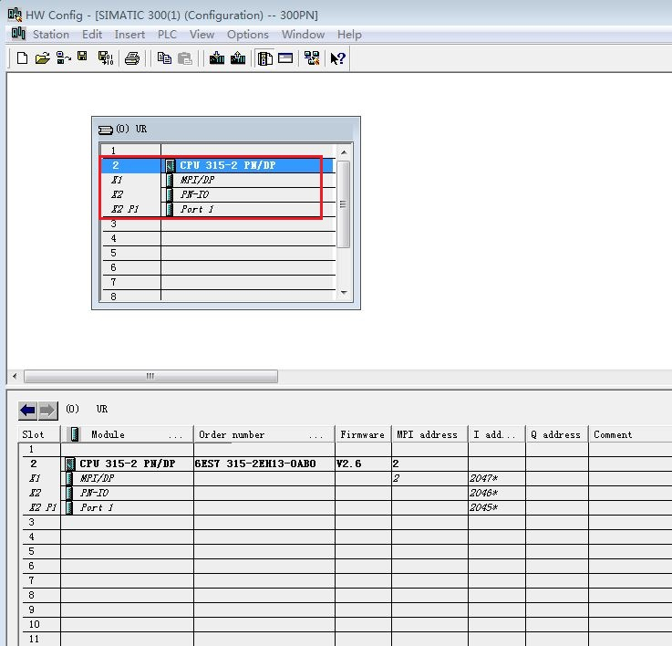
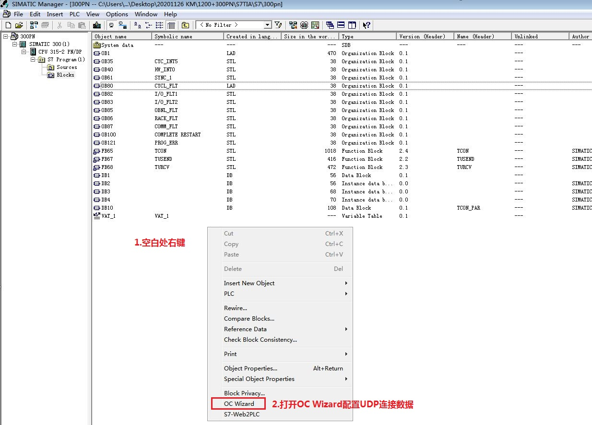
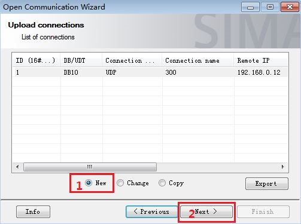
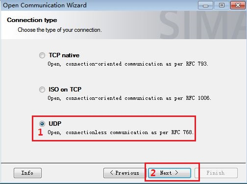
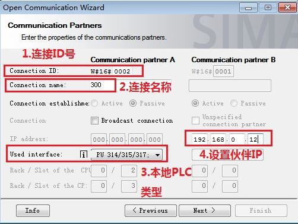
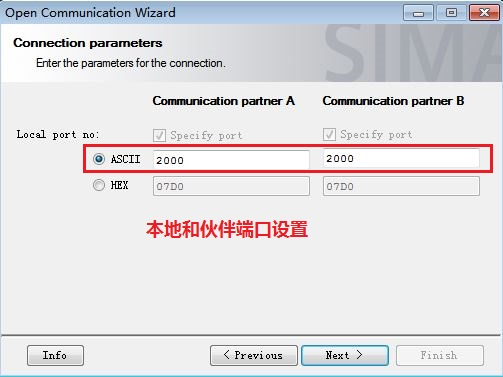
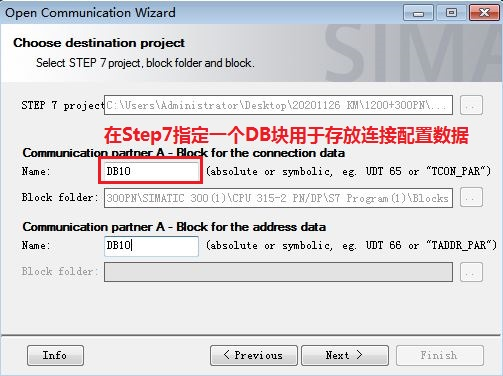
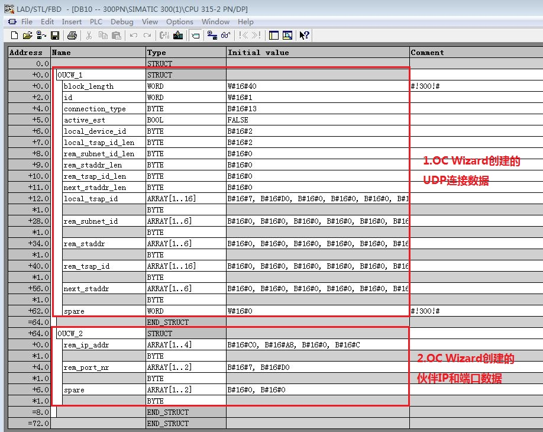
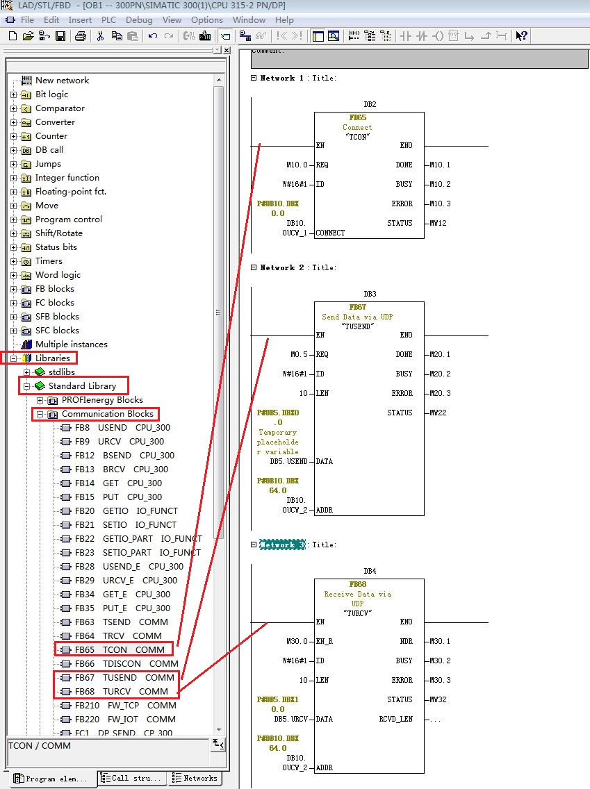
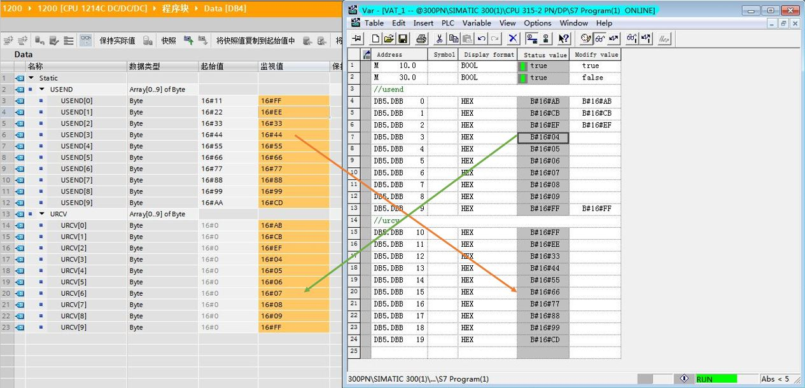

S7-1200 与 S7-300 PN 口之间的以太网通信可以通过 UDP 协议来实现，使用的通信指令是在双方 CPU 调用通信-开放式用户通信TSEND_C，TRCV_C（1200支持，300不支持）或TCON，TDISCON，TUSEND，TURCV 指令来实现。通信方式为双边通信，因此 TUSEND 和 TURCV 必须成对出现。
此外对于伙伴是S7-400PN 也可以参考本文档。
测试软/硬件：
① S7-1214 DC/DC/DC V4.4
② S7-315-2PN/DP V2.6
③ STEP7 V16
④ STEP7 V5.5 SP4
所完成的通信任务：
① S7-1200 CPU将通讯数据区 DB4 块中的 10 个字节的数据发送到 S7-300 CPU的接收数据区 DB5 块中。
② S7-300 CPU将通讯数据区 DB5 块中的 10 个字节的数据发送到 S7-1200 CPU的接收数据区 DB4 块中。
该部分内容和 S7-1200 CPU 与S7-300 PN UDP通信-TIA不同项目->S7-1200 侧硬件组态、编程和连接参数的配置 章节一致，请参见链接。
1.Step7内添加300CPU硬件
在硬件配置内添加300机架和315-2PN/DP CPU，如图1所示。

图1. 添加300 CPU设备
为了编程方便，使用 CPU 属性中定义的时钟位，定义方法如下：
双击硬件配置机架内的CPU 315-2PN/DP ，进入CPU属性设置，选择Cycle/Clock Memory，然后激活Clock memory时钟字节定义为 MB0，如图2所示。
时钟位使用 M0.5，以 1Hz 的速率自动激活发送任务。
图2. 启动时钟存储器
2.为 PROFINET 通信口分配以太网地址
双击PN-IO设置CPU IP地址，分配 IP 地址为 192.168.0.3，子网掩码为255.255.255.0，如图3所示。

图3. 分配300CPU IP 地址
3.在Step7内使用OC Wizard向导生成UDP连接参数DB块
①按照如下链接下载并安装OC Wizard向导。
创建用于开放式 TCP/IP 通信的连接数据的向导 (开放式通信向导)。
② 在Step7程序块文件夹空白处右键，启动OC Wizard向导生成UDP连接参数DB块，如图4所示。

图4. 启动OC Wizard向导
③选择新建，点击下一步,如图5所示。

图5. 新建UDP连接数据DB
④连接类型选择UDP，如图6所示。

图6. 选择UDP连接类型
⑤设置UDP连接ID号、连接名称、本地PLC类型和设置伙伴IP地址，如图7所示。

图7. 配置UDP本地和伙伴连接信息
⑥配置本地和伙伴端口号，如图8所示。

图8. 配置本地和伙伴端口号
⑦指定Step7项目内一个DB块，用来存放UDP连接配置数据，项目使用DB10，如图9所示。

图9. 指定DB块存放连接配置数据
⑧UDP连接配置数据生成完毕，生成的数据块为DB10，DB10数据结构，如图为10所示。

图10. UDP连接配置数据结构
4.在 OB1 内调用 UDP 通信指令
打开OB1，在作出指令树内调用UDP通信指令， “库” > “标准库” > “通信块”下调用 “TCON”、“TUSEND”、“TURCV” 指令。创建接收和发送数据块 DB5，发送10字节数组，接收10字节数组，如图11所示。

图11. 从库内调用 UDP 通信指令
300CPU侧配置和编程完成，编译并存盘。
下载两个 CPU 中的所有硬件组态及程序，实现 两个 CPU 之间数据交换，监控结果如图12所示。

图12. 监控结果
如果通信异常，请参考以下附加说明：链接。